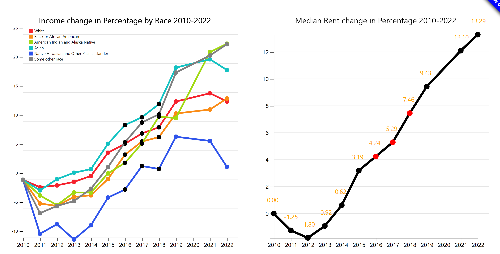

Demo Video
Embedded MP4 demo video using the HTML5 <video> tag. For example, this screen recording Prof. Cody Dunne made of Mike Bostock's flexible transitions in D3 slide:
Visualization explanation
Our visualization includes two parts. The top section features two line charts reflecting the changes in income and rent from 2010 to 2022.
Viewer can compare these two charts to observe trends from 2010 to 2022. Viewer can also explore the details for certain race by selecting the checkbox on the top left.
Additionally, viewer can use the provided buttons and mouse to explore more details.
Brushing and Linking on Line Charts

Button and Checkboxes on Line Chart
Besides the line charts section, the bottom section features two pie charts linked by a click-on function in the left pie chart.
The left pie chart shows population for each ethic group in average over past years.
The chart on the right illustrates the percentage breakdown of the selected race across different poverty statuses.
For instance, if an individual's income matches the poverty line, this person's income is considered 100% of the poverty line.
If an individual's income falls below the poverty line, then this person would be categorized as either "< 50%" or "50~99%".
Viewer can click on each slice or segment of the left pie chart to examine the distribution of poverty status among the selected race.
Pie Charts initialization
Pie Charts after clicked on the slice of 'Black or African American'
Data Analysis
Motivated by the impact of income and financial conditions on housing,
we conducted a data analysis to explore the shifts in income and rental costs among renters,
categorized by racial and ethnic groups in the United States.
Our objective was also to find out the number of renters within each racial group who fall below the poverty threshold.
The population, income, and poverty data were sourced from the official website data.census.gov.
We processed our data using Python packages Pandas and Numpy.
Generally, we loaded the datasets into Pandas DataFrame objects to clean and eliminate irrelevant data entries,
utilizing built-in mathematical functions for calculations.
Despite originating from the same website, the data sets exhibited inconsistencies in format and layout.
We had to fine-tune our delivered real date manually afterword.
The datasets for renter income and rent costs have been adjusted using the Consumer Price Index (CPI-U)
which is obtained from bls.gov.
As illustrated in our visualization, our data uses the year 2010 as a base year for calculating all inflation-adjusted income and costs.
To depict changes in income and costs, the data has been calculated to illustrate variations as a percentage of the base year value.
Due to the absence of specific rent cost data for each racial and ethnic group,
we can only present the median rent cost for all renters.
Nevertheless, it is already apparent that renters are facing higher rental costs year after year,
particularly evident as certain racial groups have a larger number of households falling below the poverty threshold.
The population and poverty status data have been averaged over a span of several years, from 2014 to 2019.
Task Analysis
Summary of task table.
Expectation: Clearly describes domain tasks, processes, goals and abstract tasks for domain problems.
Design Process
- Sketches and design choices to justify final visualization
Our visualization journey began with rudimentary sketches that laid the foundation for the final design. Initial digital drawn sketches proposed various data representation forms, including two line charts and two pie charts. The final choice of line charts for representing the income change over time and pie charts for poverty status distribution was motivated by the need for clarity and precision. Line charts effectively depict trends and changes over time, allowing for comparison across different races. Pie charts, on the other hand, provide an immediate visual cue to the proportion of poverty status within the population. The color scheme was deliberately chosen to ensure distinct visibility between categories, with each race assigned a unique color. This decision was also made to accommodate colorblind users, with patterns and symbols used to distinguish between the categories for users with color vision deficiencies.
- Evidence of iterative improvement
Please see attached design process screenshots below. The project underwent several iterative improvements based on the feedback loops and continuous refinement. For example, in terms of pie charts, before, we were considering showing both numbers and percentage rates in our pie/donut charts whereas now we only have percentage rates displayed due to data inconsistency. Also for line charts there are some changes for rent line chart. Early drafts employed partition encodings and all data trends in both charts, which cluttered and obscured data trends. Through iterative design, we introduced a dual-axis system that allowed for a clearer comparison of different demographic groups via brushing and linking interference.


- Logical discussion of design choices grounded in theory from course
Our use of color as a visual variable to encode qualitative data of different races is fundamental for easy differentiation. The course principles of visual perception were applied, especially the law of proximity, by placing related data points closer together, thus facilitating the user's ability to see patterns and trends. Dual-axis line charts were used, allowing for the efficient display of complex data without sacrificing readability. The separation of pie charts adheres to hierarchy of perceptual tasks, enabling the viewer to quickly assess proportions and compare them effectively.
- Discusses feedback from usability testing
Usability testing was integral to our design process. Feedback indicated that users found the initial line charts to be confusing because there were no clear understanding of the metric on the y-axis. This led to the introduction of y-axis layout, which improved clarity significantly. Participants also suggested the addition of interactive legends for income and rent, which we implemented, allowing users to focus on specific data points of interest. Notice though we removed our education pie chart from this visualization compared to our initial charts because participants also suggested this is not very helpful given our project purpose.
Conclusion
Short summary of work completed and areas for improvement/future-work.
Expectation: Meaningfully wraps up project and has good future directions.
In this project, our group visualize data to explore Housing Inequality in U.S.. Our group has added some interactive functions
(such as brushing and linking, buttons, and click-on interactions) to help viewers interact with the data.
The visualization could be improved further if we had more time to collect additional related data.
Acknowledgments
List here where any code, packages/libraries, text, images, designs, etc. that you leverage come from.
- D3: Data-Driven Documents by Mike Bostock.
- Pure CSS responsive "Fork me on GitHub" ribbon by Chris Heilmann.
Data sources